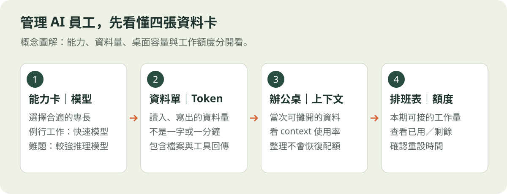
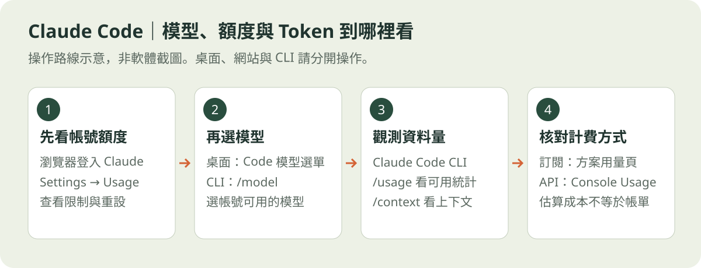
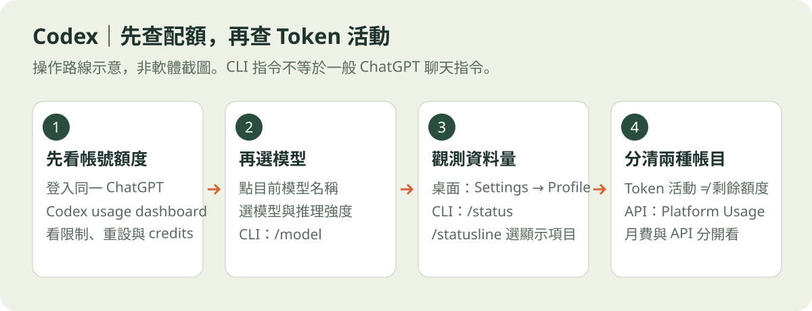
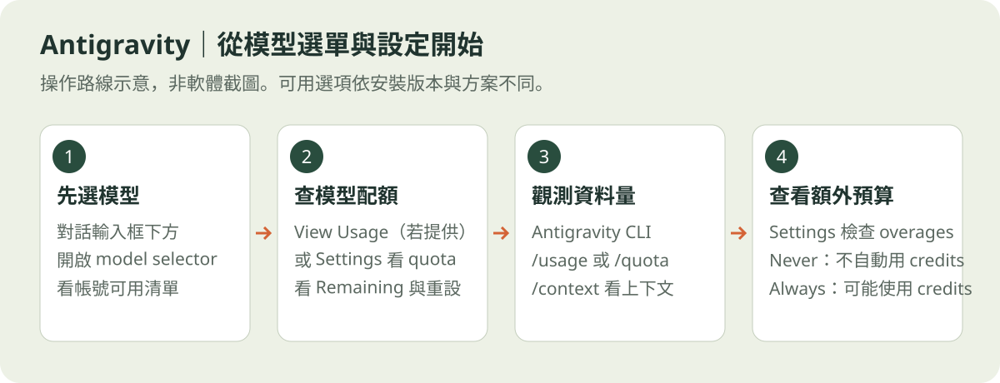
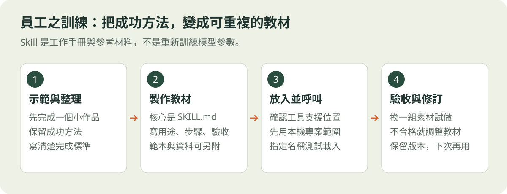

C
Claude Code
把任務交給 Code 工作區下載 Claude 桌面版 → 登入 → 進入 Code → 選擇練習資料夾。一般聊天與 Code 工作區要分清楚。
零程式基礎也能上手 · 入門實作
你決定目標，AI 動手執行。
從安裝、交代任務，到做出第一個能分享的網頁，
一起把「我不會」變成「我做到了」。
Agent 在你授權的工作環境裡讀取檔案、製作作品並協助檢查。你負責提供材料與驗收；AI 仍可能犯錯，成果要親自打開看看。「本機 Agent」是應用程式能操作本機工作環境，不代表模型完全離線運作。
建議三小時實作 · 先備好作品保存工具，完成網頁後再整理雲端素材
第一堂選一套主教即可。下載、訂閱、可使用 Agent 是三件事，先確認帳號資格，不必急著付費。
下載 Claude 桌面版 → 登入 → 進入 Code → 選擇練習資料夾。一般聊天與 Code 工作區要分清楚。
依官方頁選擇桌面版本 → 登入 → 進入 Codex／工作介面 → 開啟練習專案。確認能讀取本機檔案。
選擇作業系統與晶片版本 → 安裝 → 登入 Google 帳號 → 開啟練習資料夾，送出第一個任務。
先在「關於這台 Mac」確認 Apple 晶片或 Intel；選擇相符版本，開啟下載檔，依官方安裝指示操作，再從「應用程式」啟動並登入。
安裝成功的判斷：開啟練習資料夾，請 Agent 列出檔案。只有聊天視窗還不算完成。在桌面建立「AI練習」，放入文字與照片，再從 Agent 選擇這個資料夾。第一套 Agent 先由本人安裝，後續工具才交給它協助。
下載全班共用練習素材 ↓設定區巡禮
就像給新員工一張專屬辦公桌：材料放這裡，成果也存這裡。每個作品各用一個專案資料夾，之後找檔案、保存版本都更清楚。
第一次選專用練習資料夾即可，不要直接把整個桌面、整個雲端硬碟或磁碟根目錄當成專案。若教材在雲端，先確認需要的檔案已能在本機讀取。
若選不到本機資料夾，先確認目前是否在本機 Agent 工作環境；一般網頁聊天上傳附件，與指定本機專案是不同操作。
同一作品可繼續使用原資料夾；換新作品時，先建立新資料夾，再切換或建立對應專案。新開對話後也確認一次，避免沿用上一個作品的位置。
開始任務前，請確認這次使用的工作資料夾。 1. 回報目前專案根目錄的完整路徑。 2. 列出第一層檔案與資料夾，先不要修改。 3. 告訴我文字、圖片與成品預計放在哪裡。 4. 若目前位置不是我指定的專案，請先引導我切換，不要在錯誤位置建立檔案。 5. 若無法讀取，請說明需要我選擇資料夾或授權的步驟。 我確認位置正確後，再開始製作。
核對 Agent 回報的完整路徑，確認它能列出你剛放入的文字檔。作品完成後，回到同一資料夾找成品，依 Agent 說明開啟預覽。
只貼檔案路徑，不一定會切換目前專案；請明確確認工作資料夾。若顯示「找不到檔案」或「沒有權限」，先檢查位置與授權，再繼續。
看 Mac／Windows 複製路徑教學 ↗安裝、登入後先做這一站。以下用員工比喻幫助理解；實際配額依帳號、方案、模型與官方介面為準。查核：2026/10/23。

軟體是辦公室，模型是裡面的員工。同一套軟體可能讓你選不同模型。改字、整理資料可先用快速／輕量模型；複雜規劃、除錯再選推理能力較強的模型。先做小任務驗收，沒有一位員工適合所有工作。
同一位員工也能快速處理，或花更多心力研究。High／Max、Thinking 等設定是思考投入，不是「保證正確」；通常會影響等待與消耗。初學先用預設或一般強度，遇到難題再提高。
可想成員工處理的「資料小格」，但不是一字一格，也不是一分鐘。指令、讀進來的檔案、對話紀錄、工具回傳、回答，以及部分模型的推理都可能影響消耗。只說一句「幫我做網站」，背後也可能讀寫很多內容。
桌上能同時攤開的資料有限；context 使用百分比表示這一段對話的資料空間。接近滿載時可先保存成果、整理摘要，再延續或另開任務。桌子整理乾淨，不代表帳號使用額度恢復。
可比喻「這一班／這一週還能接多少工作」。較難的任務可能較耗額度；五小時視窗是配額計算週期，並非保證五小時連續工作。各方案可能有短期、每週或模型別限制，請看實際重設時間。
訂閱額度、額外 credits 與 API 用量要分開看。購買月費不等於 API 免費；切換模型也不保證有新的獨立配額。需要加購時，先看計費方式與金額；課堂先使用既有額度。
看懂百分比：Used 80% 是已用八成；Remaining 80% 是剩八成。Context 80% 則是桌面已放八成資料，不能拿來推算月費剩多少。平台未顯示精確 Token 時，不請 AI 猜出一個數字；以用量頁為準。

/usage，看可用的方案用量與當次統計；/context 看上下文占用。不要貼到一般作業系統終端機，也不要假設 Claude 一般聊天視窗支援相同指令。/model 開啟選單；桌面版 Code 工作區則找目前模型名稱／模型選單，選帳號實際提供的模型。先用一般模型處理小修改，較難任務再選深度推理。/cost，新版也會在 /usage 顯示 session 統計。訂閱者看到的估算成本，不等於另外收取那筆費用。看到限制時：先確認是哪個視窗或模型的額度與重設時間；整理好檔案，等恢復或依帳號可用選項調整。取不到用量與用量耗盡是兩件事。

/status 看目前狀態；用 /statusline 選擇 context、Token 計數與 rate limits 等頁腳項目，依版本提供內容為準。/model。快速／輕量模型先做改字整理，較強模型處理規劃除錯，無須所有工作都用最高強度。看到限制時：先看 dashboard 指的是哪一項 allowance、何時重設；換模型可能減少之後的消耗，但不能假設會重置已用額度。

/usage（別名 /quota）開啟配額面板；輸入 /context 看對話 Token 與上下文分類。這些是 CLI 操作，不保證桌面／IDE 同名指令可用。桌面若沒有精確 Token 累計，就先用官方額度頁觀測。看到限制時：依畫面等待相應額度恢復，或選擇仍可用的模型。Antigravity 裡使用 Claude 模型，額度依 Antigravity 方案，不會因你另有 Claude 訂閱就自動合併。
請每位學員找到：① 目前模型與思考設定 ② 帳號用量頁與重設時間 ③ Token／上下文資訊（有提供才記）。不用公布帳密或購買額度。若只看到百分比，先確認它寫「已用」還是「剩餘」。
找不到時：告訴老師你用的軟體、桌面／CLI 版本、登入方式，以及遮住個資後的畫面；不要只問 AI「我還剩多少 Token」。
完成第一個作品後再練習。你已經找到的好流程，可以整理成下次繼續使用的教材。
模型像員工的能力，Skill 像公司的工作手冊。你不用每次從頭交代排版、步驟與驗收標準；讓 Agent 在合適任務中讀取同一份教材，工作就更容易保持一致。這裡的「訓練」是工作流程教學，不會重新訓練模型參數，也不保證永遠不出錯。

通常是一個資料夾，核心是 SKILL.md，寫清楚名稱、適用時機、工作步驟與完成標準。依需要附上範本、參考資料或腳本。初學先用純文字規範，不必寫程式。
activity-webpage/ ├─ SKILL.md ← 工作教材 ├─ references/ ← 參考資料（可選） └─ assets/ ← 版型、素材（可選）
會反覆執行、標準相近的工作，例如「活動介紹網頁」「旅遊行程整理」「照片與圖說排版」。只有這一次的日期、照片和地點，放在當次任務素材；不要把每次不同的資料寫死在教材裡。
例：固定繁體中文、行動版、活動資訊區與驗收方式；每次再提供新的活動資料。
當次指令：今天請員工做什麼。
Skill：這類工作應依哪套方法做。
Rules／AGENTS.md 等：工作區共同規矩，作用範圍依工具。
MCP／連接器：員工能使用的外部工具與服務；安裝 Skill 不等於完成帳號連接。
請 Agent 說明讀到哪份教材、準備如何套用，再用小任務試做。檢查結果，將修正寫回 Skill。Skill 也會占用上下文與工作用量；它不能增加模型能力上限、繞過權限或恢復額度。
採用第三方教材前，先看來源與內容，特別是腳本、網路傳送、帳號或費用需求。
以下是本機專案的基本位置，路徑從「你目前開啟的作品資料夾」開始。可先請 Agent 確認工具與版本，再協助建立；不要把任意一份 SKILL.md 貼進聊天，就當成已完成安裝。桌面、CLI、雲端與外掛的載入方式可能不同。
| 工具 | 本機專案位置 | 使用與確認 |
|---|---|---|
| Claude Code | .claude/skills/activity-webpage/SKILL.md | Claude Code 可用 /activity-webpage 呼叫，或描述符合其用途的任務。先在 / 選單確認可用；一般 Claude 網頁／Cowork 的管理方式另看官方文件。 |
| Codex | .agents/skills/activity-webpage/SKILL.md | 用支援版本的技能選單，或明確指定 $activity-webpage；也可依用途自動套用。確認目前專案已辨識該 Skill，沒出現時重新載入／新開對話再確認。 |
| Antigravity | .agents/skills/activity-webpage/SKILL.md | 在任務中點名 Skill 並說明用途；Agent 會依描述判斷是否載入。IDE 可從 Agent 側欄 Customizations 檢查；App、CLI 與舊版本位置有差異，先依官方文件核對。 |
共用格式不代表所有功能完全相容：額外欄位、腳本、命令、外掛依賴仍要逐一確認。先使用專案內的教材，確定有效後再考慮個人共用或外掛安裝。
操作位置依版本更新；官方文件查核：2026/10/23。拿剛完成的活動網頁，保留你滿意的文字風格、區塊順序與檢查方法，請 Agent 整理為一份純文字 Skill；再換一組活動資料試做。
請把這次「活動介紹網頁」的成功流程整理成 activity-webpage Skill。 先確認目前使用的 Agent、版本與工作資料夾，說明它支援的 Skill 位置與呼叫方式。 教材請包含：適用時機、需要的素材、製作步驟、驗收清單。 固定規格：繁體中文、手機可閱讀、活動時間與地點清楚、按鈕連結可用。 缺少資訊標示「待補」，不要捏造；日期、地點與照片由每次任務提供。 先給我教材內容檢查，確認後才建立在本專案對應的技能資料夾。 不要安裝外部套件、執行下載腳本或擴大權限。 完成後告訴我教材路徑，並用另一組測試資料確認能被呼叫與套用。
驗收：找得到教材 → 呼叫得到 → 換素材仍符合標準。未符合時，修改教材再試一次。
新員工報到後，先準備作品保存工具。這一站完成安裝與登入，等網頁驗收後再保存、發布。
Git：在電腦上記錄檔案版本。
GitHub：在雲端保存與分享專案。
GitHub CLI：讓 Agent 透過指令協助登入及操作 GitHub。
請檢查這台電腦是否已安裝 Git 與 GitHub CLI，避免重複安裝。 缺少的工具請先說明用途，經我確認後從官方來源逐項安裝並驗證。 接著協助我登入 GitHub，確認登入的是我的帳號。 需要本人操作登入、密碼或授權時，請停下來清楚說明。 這一步只完成工具與登入設定，先不要上傳檔案或建立公開儲存庫。
驗收：兩項工具可用，而且 GitHub 已登入正確帳號。接著做網頁；Google Drive 留到作品發布後再安裝。
一份好任務，包含：目標、材料、成果、限制、驗收。點開小抄，複製後貼到你的 Agent。
你是我的 AI 工作助理，我沒有程式基礎。請用繁體中文回答。 請確認目前開啟的工作資料夾，列出裡面的檔案，先不要修改。
我是初學者，請用繁體中文與我溝通。 先確認工作資料夾，簡短說明計畫，只修改任務需要的檔案。 安裝工具、刪除檔案、上傳資料或公開發布前，先向我確認。 需要登入或授權時，說明操作步驟。發生錯誤先找原因。 完成後告訴我成果位置、檢查結果與需要我驗收的地方。
我要製作簡單網頁，先使用 Git 與 GitHub 保存作品。Google 雲端硬碟電腦版留到作品發布後再安裝。 請先檢查作業系統、Git 與 GitHub CLI 的安裝及登入狀態。 列出缺少的必要工具與用途，先不要安裝，不需要的工具不要加入。
請協助安裝剛才確認需要的 Git 與 GitHub CLI，逐項進行，使用官方來源；Google Drive 稍後再安裝。 每完成一項就確認安裝成功。 需要我輸入電腦密碼、登入或授權時，停下來說明下一步。 完成後列出已完成與仍需要我操作的項目。
換成你想做的題目，例如旅遊行程、診所介紹或同學會。填寫後，下方指令會同步更新；空白欄位會保留填寫提示。內容僅用來產生本頁指令，不會提交或保存。
請讀取目前資料夾的文字與照片，製作「【請填入你的網頁主題】」一頁式網頁。 對象：【請填入閱讀對象】。 內容：【請填入希望包含的內容】。 風格：有圖片、大字、清楚活潑，手機也方便閱讀。 使用簡單 HTML 與 CSS，缺少資訊標示「待補」，不要編造。 存放在目前資料夾，告訴我如何開啟預覽，並檢查連結及手機版。
請把標題與內文字體放大，背景改成米白色。 保留文字與內容順序，只調整視覺樣式。 檢查手機畫面，確認沒有文字被切掉或橫向捲動。 列出修改的檔案與檢查結果。
請協助把這個網頁專案保存到我的 GitHub。 先確認 Git、GitHub CLI 與登入狀態，檢查預計上傳的檔案，排除密碼與私人資料。 說明公開與私人差異，讓我選擇後再建立獨立儲存庫。 若我同意公開，協助啟用 GitHub Pages，驗證網址可開啟。 需要登入或授權時請引導我操作，完成後給我 repo 與網站連結。
請協助設定 Google 雲端硬碟電腦版。 我要建立「AI課程素材」資料夾，存放文字與照片。 先說明串流與鏡像／離線副本的差異，讓我選擇後再設定。 先不要同步整個桌面或文件資料夾。 請確認練習檔案已下載到本機、可讀取，並說明同步刪除的影響。
以下是我從 NotebookLM 整理的摘要與來源連結。 請依材料製作教學網頁，保留來源，區分已知事實與推測。 資料不足的地方標示待補，不要自行編造引文。 【在此貼上摘要與來源】
姓名、時間、地點正確？未知資訊有標示待補？
每個按鈕與連結都能用？圖片有出現？
字看得清楚？沒有被切掉或左右滑動？
遇到問題：說出「在哪裡、原本預期、實際看到什麼」，附截圖和錯誤文字，再請 Agent 查原因。看截圖與檔案路徑操作教學 ↓
把問題圈出來，把檔案位置說清楚。附上「正在做什麼、預期結果、實際情況」，AI 才容易找到下一步。
Mac：按 Shift + Command + 4 選取範圍，點截圖縮圖進入標示。
Windows：按 Windows + Shift + S 選取範圍，開啟截圖通知後用剪取工具的畫筆標示，再儲存或複製貼上。
傳送前遮住密碼、API key 與個人資料。錯誤文字也可以一併複製貼上，方便準確判讀。
我卡在這一步，請看附上的截圖與紅框。 我正在做：【例如：發布網頁】 我原本預期：【例如：按下後開啟網站】 實際發生：【例如：出現錯誤訊息】 請先判斷可能原因，告訴我下一步要操作哪裡。 若畫面資訊不夠，請說明需要補拍哪個範圍，不要猜測看不到的內容。
路徑就像檔案的地址。先在檔案管理工具選取檔案，再複製完整路徑，貼到本機 Agent 的對話欄。
也可按住 Option 再對檔案按右鍵，選「拷貝⋯作為路徑名稱」。快捷鍵要在 Finder 選取項目時使用。
/Users/你的名稱/Desktop/AI練習/活動素材.txt若找不到選項，可嘗試按住 Shift 再按右鍵，或展開「顯示其他選項」。請選完整檔案路徑，而非只複製所在資料夾的網址列。
"C:\Users\你的名稱\Desktop\AI練習\活動素材.txt"貼上路徑不等於上傳檔案或自動授權。本機 Agent 需要能存取該位置；一般網頁聊天或雲端 Agent 無法只靠你的電腦路徑讀檔，請改用附件上傳。雲端同步檔案也要先確認已下載到本機。
請讀取以下本機檔案： 【在此貼上完整檔案路徑】 我的目標是：【例如：依這份文字製作網頁】 請先確認檔案是否存在、是否能讀取，簡述內容，先不要修改。 若無法存取，請告訴我需要開啟哪個資料夾、提供附件或完成哪些授權。
官方操作參考：Apple：拷貝路徑名稱 ↗ · Microsoft：檔案總管與右鍵選單 ↗
Git 與 GitHub 登入已在第二站準備完成。現在把驗收過的作品保存、發布，再進入 Google Drive 素材整理。
Git 是本機版本管理；GitHub 是雲端儲存庫；GitHub CLI 是協助登入及操作的工具。裝好 CLI 不等於已授權 Agent 的外掛。
公開 repo 與公開網頁會讓別人看到內容。上傳前移除帳密、API key 與個人資料。Pages 適合靜態網站。
先學會保存作品，再整理與同步素材。Git 與 Drive 沒有安裝依賴，這是讓初學者容易跟上的教學順序。
安裝雲端硬碟電腦版，登入後在 Finder 或檔案總管找到 Drive，建立「AI課程素材」。先用單一資料夾練習。
同步會傳遞變更，包含刪除；版本保存仍交給 GitHub。桌面同步與 Agent 的 Google Drive 連接器需分別設定。
先放入來源 → 整理摘要 → 保留來源連結 → 複製給 Agent 製作作品。第一堂採手動交接即可；這裡的連結是開啟服務，沒有自動連接帳號或安裝第三方 MCP。
開啟 NotebookLM ↗實景照片版有聲簡報，共 10 頁、約 4 分 10 秒，帶你掌握今天的六站流程。用六站了解今天要做什麼、依什麼順序，以及每站的完成標準。
點選下方「全部連播」，即可播放旁白並自動換頁；也可用左右箭頭自行切頁。
開啟完整有聲簡報 ↗學習進度只存在目前瀏覽器，不會送到老師端。換電腦或清除瀏覽資料後，進度可能消失。
課前問卷涵蓋設備、工具偏好、安裝與付費狀態、主題與協助需求。這份教材尚未填入實際學員問卷網址。
只需執行一次，不用部署成網頁應用程式。此下載版已移除 Linux 與桌機選項；尚未代你在 Google 帳號執行。